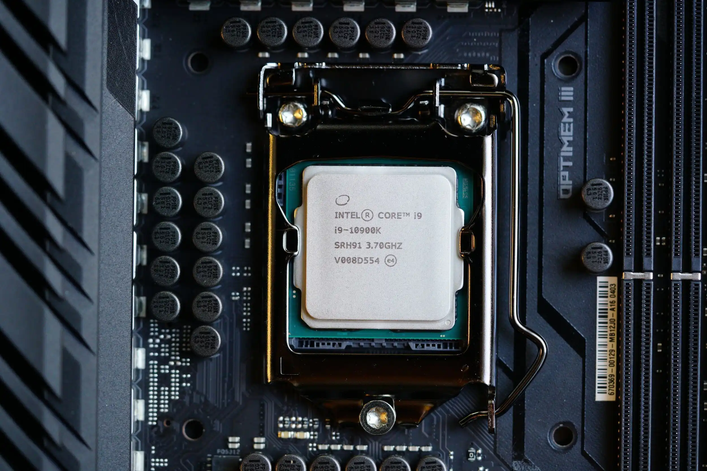
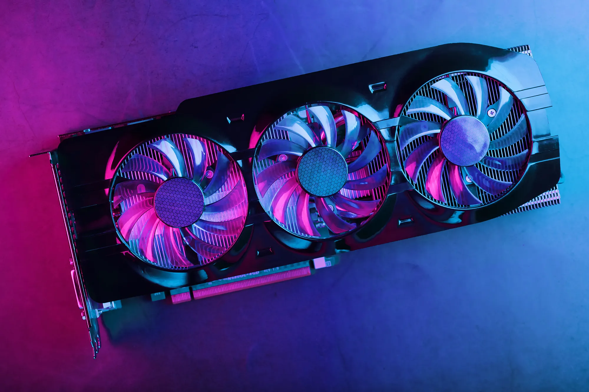

Comparativa
Componentes de un computador
CPU

La CPU, o Unidad Central de Procesamiento, es el componente fundamental de una computadora o dispositivo electrónico que ejecuta las instrucciones y procesa los datos en un sistema informático. Sus principales funciones incluyen:
-
Ejecución de instrucciones:
La CPU interpreta y ejecuta las instrucciones de un programa de software. Estas instrucciones se almacenan en la memoria principal y se recuperan para su procesamiento.
-
Procesamiento de datos:
La CPU realiza operaciones matemáticas y lógicas en los datos, lo que incluye sumas, restas, multiplicaciones, divisiones y comparaciones. Estas operaciones son esenciales para realizar cálculos y tomar decisiones en programas y aplicaciones.
-
Control de flujo:
La CPU supervisa y controla el flujo de ejecución del programa, garantizando que las instrucciones se ejecuten en el orden correcto y que se tomen las decisiones adecuadas basadas en las condiciones definidas en el software.
-
Acceso a memoria:
La CPU accede a la memoria principal (RAM) para leer y escribir datos, lo que permite el almacenamiento temporal de información necesaria para el procesamiento.
Existen 2 principales productores de CPU, AMD e Intel. Comparativa.
GPU

La GPU, o Unidad de Procesamiento Gráfico (por sus siglas en inglés, Graphics Processing Unit), es otro componente importante de una computadora, especialmente diseñado para manejar tareas relacionadas con gráficos y visualización. Sus principales funciones son las siguientes:
-
Procesamiento gráfico:
La GPU se especializa en realizar operaciones de procesamiento gráfico, como renderizar imágenes, videos y animaciones en 2D y 3D. Esto incluye tareas como la generación de imágenes en juegos, la reproducción de videos de alta definición y el renderizado de gráficos en aplicaciones de diseño y modelado 3D.
-
Aceleración de cálculos paralelos:
A diferencia de la CPU, que se centra en tareas secuenciales, la GPU está diseñada para realizar cálculos de manera paralela. Esto la hace ideal para aplicaciones que requieren un procesamiento masivo de datos en paralelo, como la minería de criptomonedas, la inteligencia artificial, el aprendizaje profundo y la simulación científica.
-
Mejora de la experiencia de juego:
En el contexto de los videojuegos, la GPU desempeña un papel crucial al renderizar gráficos de alta calidad y garantizar una experiencia de juego fluida. Las GPU modernas suelen estar equipadas con tecnologías como el trazado de rayos y la capacidad de realizar cálculos complejos en tiempo real para lograr una calidad visual excepcional.
-
Procesamiento de multimedia:
Además de juegos y gráficos, las GPU también se utilizan para acelerar tareas relacionadas con la reproducción de medios, como la decodificación de videos, la mejora de calidad de imágenes y la transcodificación de archivos multimedia.
-
Computación científica y técnica:
Las GPU se han vuelto esenciales en aplicaciones de simulación y análisis científico, ya que pueden realizar cálculos complejos mucho más rápido que las CPU convencionales. Esto se utiliza en campos como la física, la química, la biología y la meteorología, entre otros.
Motherboard
La placa base, también conocida como motherboard o tarjeta madre, es la pieza central de una computadora que conecta y coordina todos los componentes y periféricos del sistema. Sus funciones clave incluyen alojar la CPU y otros componentes como RAM, tarjetas de expansión y almacenamiento, proporcionar conectividad a través de puertos USB, HDMI, Ethernet y otros, gestionar la alimentación eléctrica y el reinicio, y facilitar la comunicación entre los diferentes dispositivos a través de buses y controladores integrados. La placa base también determina la compatibilidad de los componentes y periféricos, influyendo en el rendimiento y las capacidades de la computadora. En resumen, la placa base es el componente esencial que conecta y coordina todos los elementos de hardware en una computadora.
RAM
La RAM (Memoria de Acceso Aleatorio) es un componente vital en una computadora, funcionando como un espacio de almacenamiento temporal que permite la rápida ejecución de programas y procesamiento de datos para la CPU. Almacena temporalmente programas en ejecución y datos, facilita la multitarea, mejora el rendimiento al evitar la necesidad de acceder constantemente a medios de almacenamiento más lentos, y es esencial para el funcionamiento eficiente de sistemas operativos y aplicaciones, proporcionando una capacidad de acceso rápido y eliminando los datos cuando la computadora se apaga, lo que la distingue de los medios de almacenamiento no volátil.
PSU
La PSU, o Unidad de Suministro de Energía (en inglés, Power Supply Unit), es un componente fundamental en una computadora o dispositivo electrónico que se encarga de proporcionar la energía eléctrica necesaria para que todos los demás componentes funcionen correctamente. Su función principal es transformar la corriente eléctrica de la toma de corriente en voltajes estables y adecuados que los componentes de la computadora puedan utilizar, como 3.3V, 5V y 12V. La PSU también regula la distribución de energía a través de cables y conectores hacia la CPU, la GPU, la placa base, las unidades de almacenamiento y otros dispositivos. Además, una PSU de calidad es importante para garantizar un suministro de energía estable y confiable, evitando problemas como apagones, reinicios inesperados y daños a los componentes. La capacidad de la PSU (expresada en vatios) debe ser suficiente para alimentar todos los componentes del sistema, y es crucial para el funcionamiento adecuado de una computadora.